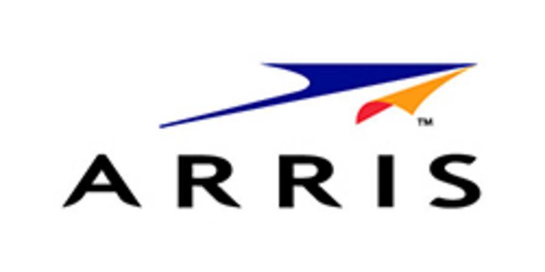
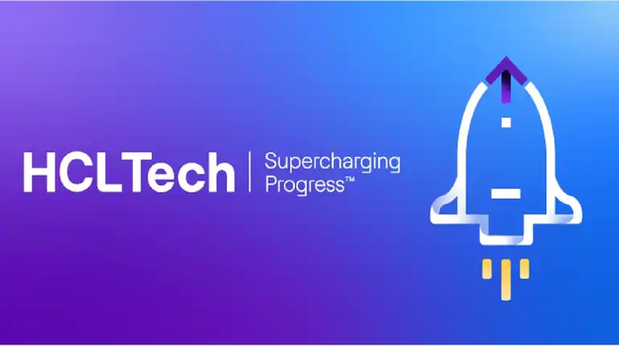
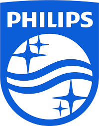

About me
I am Prem Kumar Chedella, currently working as a SW Programmer at Visual Computer Center, King Abdullah University of Science & Technology, Saudi Arabia.
23+ years of rich experience in the industry with reputed companies and academica.
Recently, building datasets, tools and applications using Machine Learning and Deep Learning in Computer Vision. Developing different data sets for Deep Learning. Defining Software architecture for various application in Tomography, Urban Planning.
Expertise in gathering requirements and architecting embedded system software solutions for High End Digital Television (HDTV), Connected TVs, Smart TVs, Set Top Box (STB), DVD, Personal Infotainment, wireless server and client products, experienced in the complete system development life-cycle. Also, expertise in the research domain of performance visualization techniques, tools and analysis of multiprocessor/cores; also in the System Level Design, Hardware/Software Co-design methodologies.
Deft in determining both technical and business goals in consultation with top management and giving technological direction to meet organizational objectives.
Possess broad competence in strategic management of technical matters with the distinction of launching and driving new IT initiatives, and achieving organizational objectives.
An enterprising leader with the ability to train and motivate cross-cultural teams and university students towards optimizing performance levels.
Expertise in IP STB, DTV, Connected TV, DVB, IPTV, HbbTV standards: software development of middle ware, applications, and UI development with Linux and embedded C, C++, Direct FB, and Java Script.
Participation in Technology Know How generation and advanced technology workshops.
Planning, designing, developing, and delivering end to end software (manufacturing ready) product solution for embedded systems.
Communicating, analyzing and problem-solving skills to help identify, communicate and resolve systems execution architecture issues like memory leaks, illegal memory accesses, exceptions in the system.
Project planning, scoping, effort estimation, tracking client communication, and presentation. Interacting and guiding team members to ensure smooth progress of project work.
Recruiting, mentoring, deployment, monitoring, and development of the team.
When not working, you'll find me hanging out with yoga, cooking :).
I'd love to hear from you - feel free to write to me at prem.chedella@gmail.com anytime!

Work Experience
 Software Programmer
Software Programmer
Visual Computing Center, KAUST, SAUDI ARABIA.
June, 2014 - Present

Staff Software Engineer
ARRIS (Former Motorola Mobility), Bangalore, INDIA.
September, 2011 - June, 2014

Technical Manager
HCL Technologies, Bangalore, INDIA.
Feburary, 2010 - September, 2011

Senior Technical Leader/Technical Consultant
Philips Innovation Campus, Bangalore, INDIA.
December, 2000 - Feburary, 2010
Member Technical Staff
HCL Technologies, Chennai, INDIA.
March, 2000 - December, 2000
Education
 M.Tech in Computer Science
M.Tech in Computer Science
Indian Institute of Technology, Guwahati, INDIA
Aug 1998 - Jan 2000
Projects Carried-out
KAUST
1. Working on the edge device, Jetson Xavier NX
Capture different camera data on the device.
- Camera 1: CSI camera, use GStreamer and OpenCV to catpure of Gray Scale video data.
- Camera 2: Thermal Camera, use OpenCV to capture the Gray scale video data.
- Camera 3: CSI Camera, Use GStreamer and OpenCV to capture the RGB video data.
2. Working on the edge device, Raspberry PI
Experimenting with the RF data in the medical domain application, and displaying the data in charts.
- Retrieving data from a VNA device (can be very helpful for RF experiments). Libre VNA
- Using the RF data, medical application, display the data in charts using Qt.
3. Fine Tuning different models on Super Computer
Fine tuning and fine tuned different models on High Performance Computer/Super Computer.
The following Models are the fine tuned:
- Fine tuned Stable Diffusion Model for human dataset. Followed guidelines Diffusers Train to Text for preparing dataset, training etc.
- Fine tuned Style GAN3 for Windows Dataset.
- Fine tuned GLP Depth Estimation for Windows Dataset.
4. Develop Human Dataset
Designed and developed a pipeline for the human dataset creation. Generated close to 2.12M images from over 2B images.
The following are the different pipelines:
- Download parquet files from LAION-2B dataset.
- Filter the parquet file, for the image resolution and then write the filtered data to the parquet file.
- Download the data from the filered parquet file, which is over 500GB of data.
- Filter the images, for the object (person) and bounding box resolution, and probability score using Mask RCNN.
- Filter the Mask RCNN images, for all 17 key points and bounding box resolution, and probability score using Key Point RCNN.
- Filter the 17 key point images using CLIP, Contrastive Language-Image Pre-Training. For example, CLIP prompts are "a photo of a toy", "a photo of a book", "a photo of a frame", "a photo of a magazine”.
The code is available at Git HUB Human Dataset.
5. Develop Windows Dataset
The following are the different tasks:
- Interact with freelancers at UpWork for issuing the contracts for windows photos across the globe.
- Interacting with the freelancers for their work progress and feedback on the quality of the images.
- Designed and developed couple of python scripts to download jpeg, raw and trace (.gfx, .fit) files from google drive, dropbox.
- Designed and developed a python script to check for jepg image there is a corresponding raw image.
- Upload the data to the Miami Vision Server.
- Crop the window (s) in the images. Upload the cropped data (json files) to the Miami Vision Server.
- Desinged and developed a python script to generate GPS latitude and longitude information. The GPS data embedded in the image or from the traces. Upload the GPS data to the Miami Vision Server.
- Developed a JavaScript code and integrating in Leaflet , to build web mapping applications.
The Windows Windows Dataset is published at KAUST dataset repository.
The code is available at Git HUB Windows Dataset.
6. Develop Street Signs Dataset
Designed and developed a pipeline for the street signs dataset creation. Generated close to 10000 images.
The following are the different pipelines:
- Download the street sign images from Flickr and use different search strings.
- License types are 1, 2, 4, 5, 7, 8, 9, 10
- Image resolution is greater than 1024x1024 (url_o: Original (4520 × 3229), url_k: Large 2048 (2048 × 1463), url_h: Large (1600 × 1143))
- Manually delete images that are not street sign images since Flickr downloads unwanted images.
- Remove the background of the images, Background Remover. Manually delete images if the background removal is not correct.
- Developed a tool to crop the object, which has Steet Sign. Manually delete images if they do not require rectification or if the images are not properly cropped.
- Developed a tool for Image Rectification/Warping of the images. Manually delete the iamges if the images are not rectified properly.
- Developed a tool Check if the cropped image size is greater than or equal 340x340 then only consider otherwise delete the image.
The code is available at Git HUB Street Signs Dataset.
7. Design and Development of framework for Computed Tomography (CT) Reconstruction
Designed and developed a Software frame work for diffeent priors of Computed Tomography Reconstruction.
The following are the different publications based on this framework:
- Warp-and-Project Tomography for Rapidly Deforming Objects
- Super-Resolution and Sparse View CT Reconstruction
- Space-time Tomography for Continuously Deforming Objects
- TomoFluid: Reconstructing Dynamic Fluid from Sparse View Videos
- Study of spray structure from non-flash to flash boiling conditions with space-time tomography
The code is available at Git HUB Tomography Software.
8. Saudi Electricity bill Parsing
This work involves converting unstructured data to structured data. The KAUST receives electricity bills in form of PDF file from Saudi Electricity Corporation. It receives many bills each month, each bill consists of many pages (varies from 50-1000 pages), different invoices types.
Designed and Developed a frame work that converts Unstructured data (PDF) to Structured Data (CSV). The CSV file data is used usage projection of each month and cross verifications of payment.
- Convert the PDF data to text data using pdftotext executable.
- Convert text data to a invoices blocks.
- Depending invoice block type, get the invoice data for each invoice.
- Convert Arabic data to English Data.
- Write the data in CSV file.
- If there invoice data field or format changes, there is a need to update the same in the parsing as well as CSV file.
The code is available at Git HUB Saudielectric.
9. Mesh Terrain Rendering using UNREAL Engine4
Design and develop a plugin for reading into UE4 (Unreal Engine4) elevation data that can be used for displaying a 3D mesh of terrain of the world.
- Parse ASCII file that represents a grid of elevation data from a SRTM tile using C++ inside a UE4 plugin.
- Dynamically generating a procedural mesh inside UE4.
- Parse the grid data and store into an UE4 3Dvector array representing vertices.
- Create triangles from the vertices using the grid layout.
- Create a new function in the plugin that will use the vertices and triangles from the grid layout to replace the vertices and triangles.
- Rendered of the elevation data in UE4, Used the lat/long information to spatially locate the tile, Added texture to the elevation data, Drawing on top of the mesh for simple mission planning.
- This frame work is used for rendering Digital Elevation Model(DEM) data.
- This frame work also supports rendering Digital Surface Model(DSM) data.
The code is available at Git HUB UE Mesh Renderer.
10. Way Finder for Indoor Navigation
Prototyped different Open Source tools for indoor information service offering GPS-less localization, navigation and search inside buildings using ordinary smartphones. Following are the different applications/tools used for prototyping:
- Anyplace, A free and open Indoor Navigation Service with superb accuracy.
- Mapwize, an indoor, mapping and wayfinding tool. Now acquired by servicenow.
- MazeMap, an indoor maps, powerful data visualization and indoor navigation tool for Wayfinding.
11. SFM Automation
Construct a complete geometry mesh using Multi View Environment and Colmap.
The MVE is installed on the Linux Machine and Colmap installed on the Windows Machine. These machines are servers.
Following is the procedure:
- Read the JPEG images which has geo tag, get the Latitude and Longitude information.
- Based on the no. of available machines where MVE and Colmap is present and no. of images, cluster these images (k-means, KdTree).
- Transfer the clustered images on the servers.
- Get the mesh for the clustered images.
- Combine the clustered meshes into a bigger mesh.
The code is available at Git HUB SFM Automation.
12. Weather Vizualization
The visualization system WindViz allows one to visually analyze the wind resource in the MENA region and perform simple analyses like Area average, Time average.
It uses google map APIs to display area of the interested region and user selection.
Developed using C++, Qt, third party libraries (gmt, gs, netCDF C++).
13. Various Automations Tools
- Email Automation Designed and Developed a tool that sends workshop/conference emails automatically. The email contains a special invitation letter for each member.
- Conference/Visitor Badges Generation Designed and developed a tool that automatically generates a pdf file which contains the conference or workshop or visitor badges. Badges may have front and back page information.
- Certificate Generation and Email notification Designed and Developed a tool that generates participation certificates for training/workshops/conferences and then sends the certificate in email automatically.
This tool saves 90% of manual effort
Developed using Qt, C++, SMTP, Microsoft EWS, CURL.
This tool saves 90% of manual effort.
Developed using Qt, C++.
This tool saves 90% of manual effort
Developed using Qt, C++, SMTP, Microsoft EWS, CURL.
14. Paraview Plugin
Designed and Developed a Paraview Plugin for seed point generation or facults extractions and visualization of the seed points.
Following are the components:
- Ported Fast Marching Method from Matlab to C++.
- Ported Hessaian based extraction from Matlab to C++.
- Re-constructed surface using Point Cloud Library (PCL).
- Developed Paraview Plugin using VTK (Visual Tool Kit).
- Generated Triangulated Mesh.
- Extracted Boundary curve using CGAL.
15. Parcel Generation
16. Consolidation of Riders
17. Hachid
18. Cutting Solve Problem
ARRIS (Motorola Mobility)
Lead a team of 6 members for design and development of diagnostics tool, MotoPLYR for STB based on KreaTV architecture, Linux, C++, and Java Script.
This tool is used for diagnosing of Hybrid (IP as well as QAM) STBs which has server and different clients in the home network. Different components of the system which includes HDD (SMART attributes, status, temperature, and recovery), USB, eSATA, QAM tuners, DRAM, Ethernet, MoCA, LED’s, Power Control, Fan Control, Audio Output, Video Output, HDMI, Cable Card, etc., are diagnosed. Also this tool is used for getting streaming (QAM, IPTV, VOD, and DVR) characteristics, network statistics, process statistics, etc. This tool can be initiated from TR-069, Remote PC, and UI. The tool’s UI is based on the browser (which has HTML5 support) using SVG and Java Script.
Involved in the project estimations, high level design, low level design, development, review, and delivery.
Developed the tool from the scratch.
HCL Technologies, Bangalore
As a Manager, deputed to one month and one week to client location for requirements, design, and deliverables discussions for Web Browser, IPTV and HbbTV features, which are interactive features of Digital Television (DTV) and connected TV.
Started and managed the offshore-team of 25 members for design, development, testing and delivery of Web Browser, IPTV (Japan and Proprietary), and HbbTV using commercial browser (opera) from scratch.
Designed and developed various plug-ins, helper applications using C++, Direct FB, commercial browser SDK, User Java Scripts, Native Java Script Extensions (NJSE), and using proprietary Frameworks.
Used NPAPI plug-ins, libcurl, Native Java Script Extensions, User Java Scripts, Open IPTV Forum (OIPF) for HbbTV, glib, doxygen, Video Backend for HTML 5 (video/audio tags), ns plug-ins, gmock/gtest, generate your project (gyp), valgrind.
Philips Innovation Campus, Bangalore
Designed and developed a shared library mechanism in TV550 for storing the retrieving of programme information of DVB-C, DVB-T services in the persistent storage. The Direct FB FusionDale mechanism (IPC) used for interaction between the applications in the system for accessing the persistent data in the SPACE architecture.
Designed and developed an algorithm for pointing based gesturing, a control language for identification of gestures instead of traditional remote control. Verified both gesture algorithm and control language on TV543 platform using USB air mouse and U-wand. TV543 platform is based on MIPS, Linux and used C, MG-R frame work.
Designed and developed, Joint User Interface and Control Engine (JUICE), a single thread control engine, which mainly requires RTK, and graphics supports for different Consumer Electronic devices like DTV, DVD, STB, etc.
Ported RTK and graphics (DirectFB) on different platforms like Linux, ST20, VxWorks, PSoS, Renesas .
Interacted with external supplier for developing WYSIWYG tool of JUICE Application Development Environment (JADE), for the creation and verification of User Interface with application and middleware. This reduces 40% of development cost.
Developed a JPEG decoder for displaying advertisements data for on-line services in the EPG, generates revenues for the product.
Usage of MVC (Model View and Control) different design patterns like Decorator, Strategy, Composite, and Chain of responsibility.
Ported JPEG2000 on TriMedia, used TM compilation and hardware instruction to reduce the decoding time. Performance improvement of 11% achieved.
Developed abstract performance modelling of ASIP using COSY model. Used Y-API, a model computation methodology; A|RT, an abstract component modelling; VCC, performance modelling of hardware; and TSS, performance model of the entire system.
Worked System Level Design, and Hardware/Software co-design Methodologies.
HCL Technologies, Chennai
Identification of malfunctions in the hardware setup and functioning of the system, if there are any.
Developed POST (Power On Self Test) diagnostics runs after power up but before operating system of the board takes the control. The functional modules of the PKE board are CPC710, UART, SDRAM, FPGA, DPRAM, Ethernet Controller, HDLC 672 Controller, HDLC 32 Controller, SAR, and LMB.
Developed board diagnostics and Power On Self Test (POST) modules with first time right quality.
Power PC 740, assembly and C used for developing diagnostics modules.
Certifications
Project Management Professional (PMP)®
Project Management Institute
Issue Date: September 2021 - Expiry Date: September 2024
Credential ID: 3141771
Patents
Publications
Contact
Address
KAUST,
Thuwal, Saudi Arabia
Email
prem.chedella@gmail.com
Phone
+966-56-898-5109
+91-9845973404 (WhatsApp only)
Miscellaneous
Travelled Countries:
Netherlands, China, Hong Kong, Singapore, Japan, Saudi Arabia,
United Arab Emirates (UAE), United States of America (USA), Italy, Swizerlands,
Mauritius, France, Egypt, Jordan, Indonesia.
Visas:
- USA B1/B2